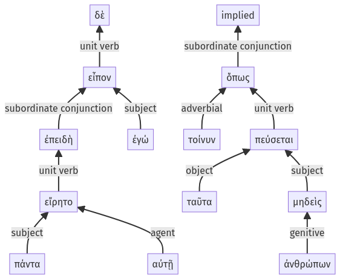

Lysias, Oration 1, 1.20.58-1.21.8a
1.20.51-1.20.57a | 1.21.9-1.21.19a
Sentence 53
1.20.58-1.21.8a
ἐπειδὴ δὲ πάντα εἴρητο αὐτῇ, εἶπον ἐγώ, "ὅπως τοίνυν ταῦτα μηδεὶς ἀνθρώπων πεύσεται:
2 ἐπειδὴ πάντα εἴρητο αὐτῇ
1 εἶπον ἐγώ
3 ὅπως τοίνυν ταῦτα μηδεὶς ἀνθρώπων πεύσεται
ἐπειδὴ δὲ πάντα εἴρητο αὐτῇ, εἶπον ἐγώ, "ὅπως τοίνυν ταῦτα μηδεὶς ἀνθρώπων πεύσεται:
Highlighting:
- connecting words
- unit verb
- subject
- object
Color code:
- independent clause (level 1, transitive verb)
- subordinate clause (level 2, transitive verb)
- quote (level 2, transitive verb)
- subordinate clause (level 3, transitive verb)
